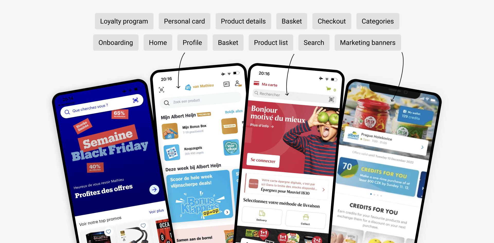
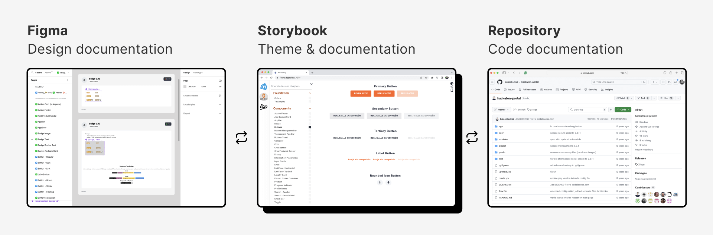

Building a white label app for a
multinational retail company.
July 2022 - Now
AH, Gall & Gall, Etos
Figma, Token Studio, Jira, Github
In 2022, the multinational retail company Ahold Delhaize increased the collaboration between its dutch brands to take a leap in its omnichannel strategy. By building a strong White Label eCom platform, brands can reach more customers while reducing their cost & development efforts.
Our team is busy with the development of new features, usability testings, and system maintenance. Stay tuned for more details in the coming months.
Overview
In a year, our team managed to launch two apps and introduced multiple features. Due to the rapid growth of the platform, reducing the gap between design and code became paramount.
As the principal designer working on this platform with a team of 12 developers, I was responsible for overseeing the operational implementation of the features and the system to ensure a consistent and unified User Experience across all the apps.
In numbers
components
Fully documented & aligned with devs.
succesfully launched
From intake to growth within 1 year.
customers in NL
Within a year for Gall and Etos combined.
extra revenu
For the 2 brands, 6 months after release.
Context — What is a White Label product?
White labeling is the process of rebranding a single product (or service) for multiple companies to sell as their own. This way, each company can focus on their business and marketing efforts without being concerned by the technical aspect.
To make it work efficiently, a White Label product needs a design system to ensure consistency and avoid redundancy across various pages and channels in a standardized approach.
Instead of manually changing the same element in multiple files a design system allows for automatic updates throughout the application by just changing a single instance. To have a white-label design system makes it flexible, brandable, accessible, and scalable.
Research
Aside from benchmarking other eCommerce Apps, we scrolled through numerous articles, blogs, and YouTube videos to gain additional insights into various aspects of a white label system. This ultimately helped documenting our activities and learnings towards developers and designers.
Challenges
- Natural silos between designers from other brands and departments
- Maintain the development pace and the quality of the codebase
- Make time for user research while making quick design decisions
Our approach
- Introduce a systemic way of working, assign roles, meet every week
- Try to document as many decisions as possible to keep track of the improvements
- Set up a research roadmap, and plan activities for every new feature
Early sketches — The backbones of the Apps
Theming framework — Built to scale up
Tokenising the UI allowed us to standardize our components and speak the same language between designers and developers. Defining and documenting these tokens/rules together was the key to success.

➊ Foundations
To make our system scalable, we had to design and code strong foundations. These would serve as a framework to build more complex components.
➋ Components
We started with the smallest components (buttons, labels, lists, ...) and combined them to form progressively more complex components (product cards, banners, menus, ...).
By pricisely defining how each components should look like and behave, we coule eventually define the core parameters of it, while allowing some very exceptional overrides (thoroughly documented for future improvement).
➌ Workflows / Features
By thinking about features and workflows from a White Label perspective, we could focus on the core functionalities without being 'distracted' by each brand particularities. This helped us to gain speed, be consistent, and communicate clearly the stories to the development team.

Documentation — The anchor that holds it together.
We can't say enough how important documentation is for a design system. Besides being the main reference, this is also where conversations between UX and Tech about building & evolving the system begin.
The storybook — Where designers and engineers meet
How to ensure that all team members would speak the same language? By using a UI gallery that showcases each foundation and component in a dynamic way. Their (design & code) names are documented, as well as their parameters and behaviours.
Multi platform, multi device
Thanks to the Flutter framework, solid foundations and reusable components, the apps are available for both iOS and Android, and for mobile as well as for tablet.

Impact
- Defining a (design/white label) system from scratch
- Created 8 apps (2x2x2 platforms/brands/devices) in 8 months
- 10 major features launched and tracked
Learnings
- Documentaion of of components
- Being the 'system guardian' to ensure consistency and maintainability
- Manage a roadmap of research and features
What's next now?
The Apps will continue to evolve, keeping as many common features as possible, but differentiating where impact is big, through CRO, business demand, and other usability test